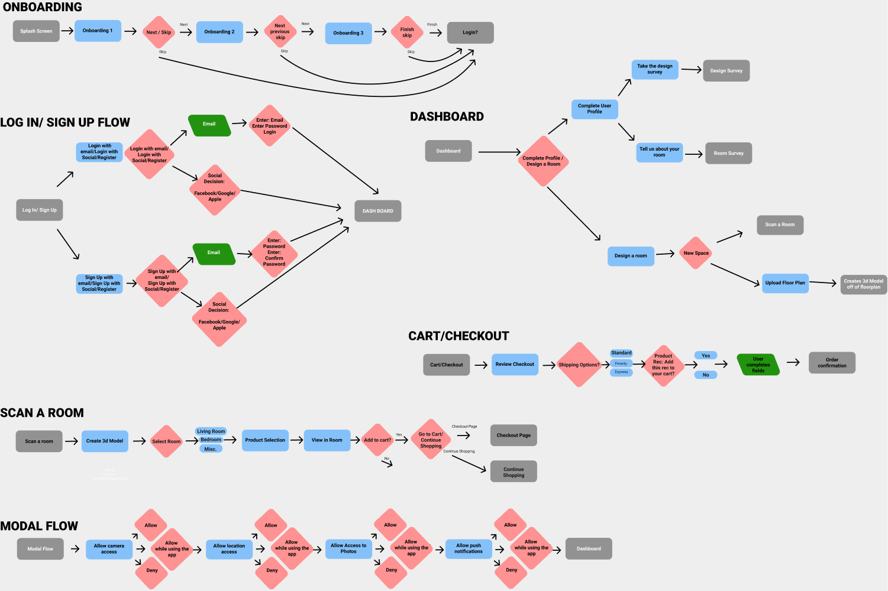

About the project
Problem
Interior design can be an overwhelming task for many people. It’s hard to know how to get started, what pieces will fit in each room and how pieces will fit together in a space without having them all laid out.
Solution
INK! allows you to design, decorate and set up a new spacewith AI generated suggestions. This app helps take out the guesswork of interior design.
My Role
I collaborated with two other UX designers on all aspects of this project. We came up with the app concept, did the user research, and designed the UI. I took the lead on wireframing, UI design, and prototyping.
Tools
- Figma
- Miro
- Adobe Photoshop
- Affinity Designer
- Trello
Empathy
The Design Process
Through the Design Process, we were able empathize with potential users who have struggled to design their spaces and struggled with AR furniture apps, define and key requirements user journeys, brainstorm new ideas, and prototype a new design.
User Research

Definition
Priorities
- Make interior design easy and accessible to everyone
- Use 3d scanning to create a digital space for user to plan their space in
- Make the buying process seamless

Storyboard
User Journey Map

Ideation
Brainstorming & Prioritization
Through the brainstorming exercise, I Like, I Wish, What If?, we found features that we wanted to priortize or put on wish lists.
I Like
- Predesigned rooms (Ikea, Crate & Barrel)
- When VR is actually helpful (rarely)
- Decluttering spaces
- Getting helpful suggestions
- Good customer service
I Wish
- I can see my items in my space before I buy
- The app is extremely easy to use
- AR & 3D are intuitive
- I can get multiple suggestions for how to use my space
- All items sold on the app are AR/3D friendly
What If?
- I had custom design recommendations
- People came to take away my clutter
- Social aspect - I could share my designs
- Envision a cleared space - taking a cluttered space and seeing renewed
- Personal digital interior designer

User Flow
UI Prototyping & Design
Branding
The brand INK! started as a team name, "It's not a Koala!" based on an inside joke, but then we liked the concept of INKing interior design spaces, "sketching" your designs in a digital space before buying anything. The logo design came from that joke and thinking about Magritte's "Ceci n'est pas une pipe" painting.
I typically like sans serif fonts, but wanted to branch out for this logo and found that I really liked BelucianUltra and how it played with the koala. And for our Value Proposition Statement, I felt that "Visualize Your World" epitomized the goal of INK!

Wireframing
Wireframing the layout was important to the process, visualizing where elements were going to be and how the site would be mapped. Sticking to lo-fi for laying out the page flows allows us to concentrate on ideas without getting stuck on colors, fonts, and exact details. This process allowed us to iterate our flows before making hi-fi designs.
Guerrilla User Tests
We user tested our lo-fi designs to get feedback on the how the user flowed through the app. We were able to iterate our desings based on this user testing with improvements to onboarding, the log-in process, searcing for furniture, and the big improvements to the checkout process.
Final Thoughts
INK! was great to work on through the conception process. In the beginning, we had a lot of great ideas - from decluttering to custom design recommendations but decided to go with a more simplified version. In the future, we would like to incorporate some of these features in order to make the experience more personalized such as an aesthetic finder survey, updating our recommendation algorithm and eventually expanding into the business world.